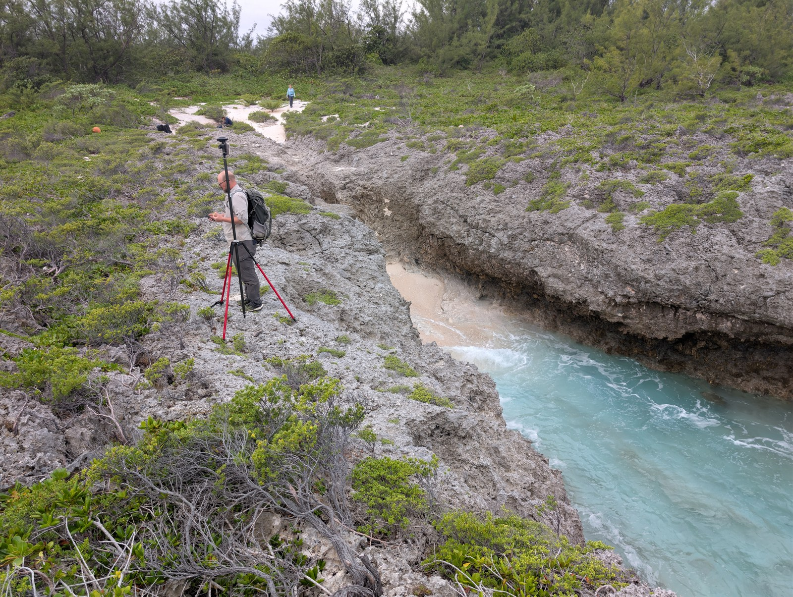

What do ancient coastlines tell us about sea level and ice sheets?
Connect fossil reefs, beaches, and dunes across whole landscapes to test histories of sea-level change.
Coastlines and ice sheetsWe investigate how sediments preserve—and sometimes obscure—changes in sea level, climate, and the carbon cycle.
Our group at the University of Victoria combines field geology, geochemistry, and quantitative models to test explanations for Earth’s past.

Rocks are records shaped by the processes that built and altered them. Understanding those processes lets us ask better questions of the past.
Connect fossil reefs, beaches, and dunes across whole landscapes to test histories of sea-level change.
Coastlines and ice sheetsInvestigate geological clocks and the chemical changes that accompany deposition, cementation, and alteration.
Chemistry and geological timeDistinguish environmental change from the effects of sediment transport, local chemistry, and uncertain timing.
Carbon and climate history
The 2026 Cook Islands campaign brought together observations of living reefs, raised limestone, coastal landforms, and local water levels.
Follow the fieldwork, inspect an outcrop in 3D, and see how we connect a place to a scientific question.
From the original observations to the models and papers that make an interpretation testable.
Edmonsond & Dyer · 2025
StratMC combines uncertain ages and incomplete proxy records to reconstruct shared environmental signals. Stacey Edmonsond led the software, testing, and documentation.
Dyer and colleagues · 2021
Sea-level patterns across the Bahamas help distinguish land motion from changes in global ocean volume during the Last Interglacial.
van Wieren, Dyer & Husson · 2026
Models show how erosion, reworking, and redeposition can produce matching isotope shifts without a shared global environmental event.
Students develop their own questions with close mentorship, shared field experience, and a wider community working on Earth history.
Our recent graduates are taking their research into new settings.
Through HiSEAS, Blake contributes field geology, sedimentology, and quantitative interpretation to an international collaboration investigating ice-sheet change during the Last Interglacial.
Our role in HiSEASInterested in research collaboration, public science, or supporting the next generation of Earth scientists?
Partnerships & support